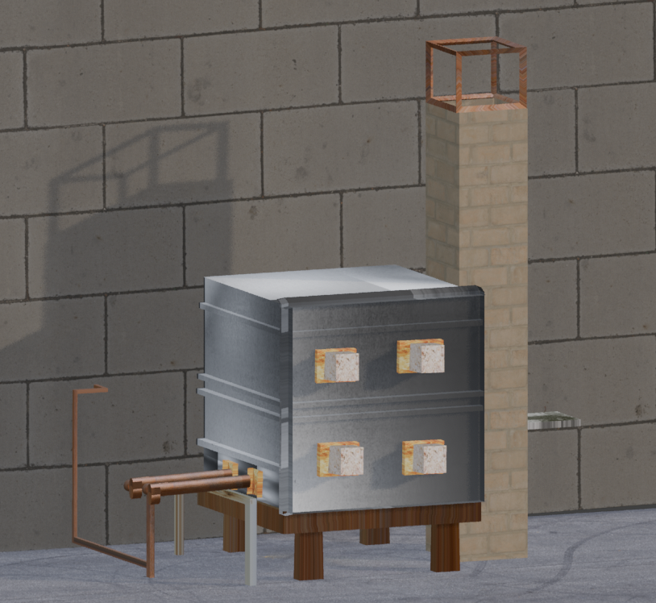

For this project, I chose to create a model of a soda fired kiln, specifically one that resembles the one here on campus. I’ve been interested in atmospheric firings for a few years now and I would eventually like to explore building my own kiln. eventually exploring kiln building. This project took a lot of trial and error as I figured out how to create different parts of the kiln in Blender. I had to refer back to the class slides for most of the steps, which helped me understand each step better. I added the kiln’;s burners on one side of the kiln and extruded the burner ports inward in hopes of making them look realistic. I also created the chimney on the right side by scaling a cube along the Z axis. Overall this project was a really great learning experience. Even though some parts were challenging, I enjoyed the process and would like to keep exploring modeling in Blender in the future.